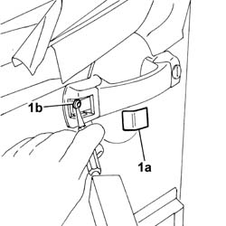
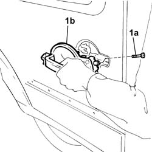
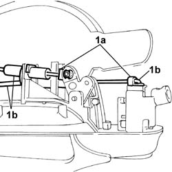
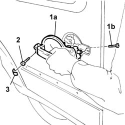

7020D18 exterior handle with lock block - r+r
- Path
- Procedures > 70 FITTINGS > 7020 LOAD CARRYING COMPARTMENT DOORS > 7020D sliding door closure devices > 7020D18 exterior handle with lock block - r+r
- Kind
- repair procedure (removal / refitting; the operation number is the code)
- Applies to
- all engines; all production periods
- Interactive page
- https://sloeber94.github.io/elrnDB-fDbl/en/#/2585063
Applies to: all engines; all production periods
 Removing
Removing
 Refitting
Refitting1. Remove the protective cap (1a) and, using an ordinary punch, undo the shear bolt (1b).

Applies to: all engines; all production periods
1. Undo the fixing bolt (1a) and remove the handle (1b) from its seating.

Applies to: all engines; all production periods
1. Open the retaining clips (1a) and disconnect the flexible cables (1b) for opening/closing the door from the handle.

Applies to: all engines; all production periods
Refitting
RemovingFit the flexible cables and secure them with the retaining clips.
1. Fit the handle (1a) in its seating and tighten the bolt (1b).
2. Use a new shear bolt and tighten it until the head breaks.
3. Fit the protective cap.
